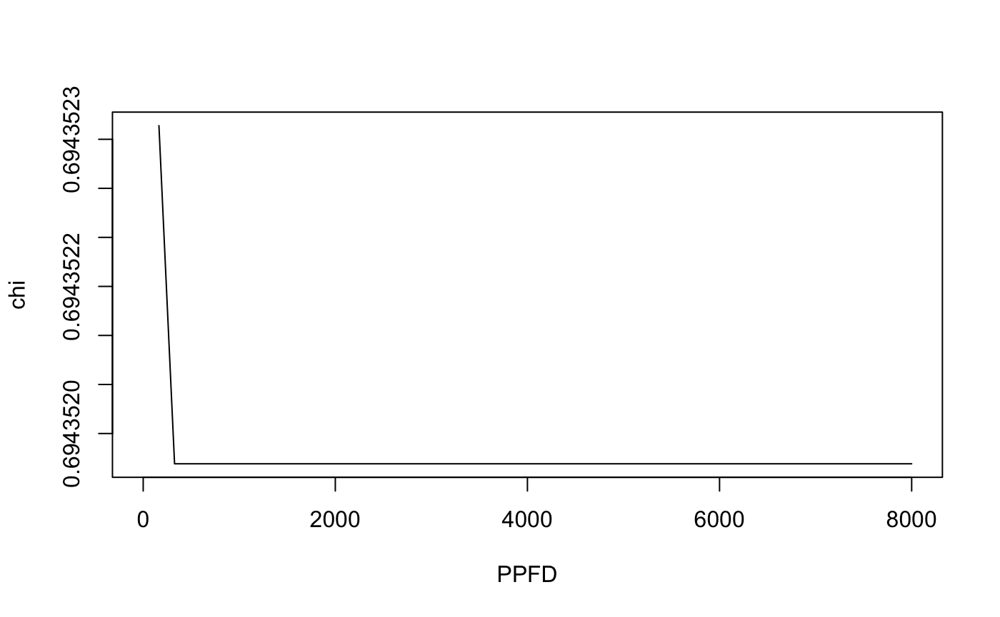
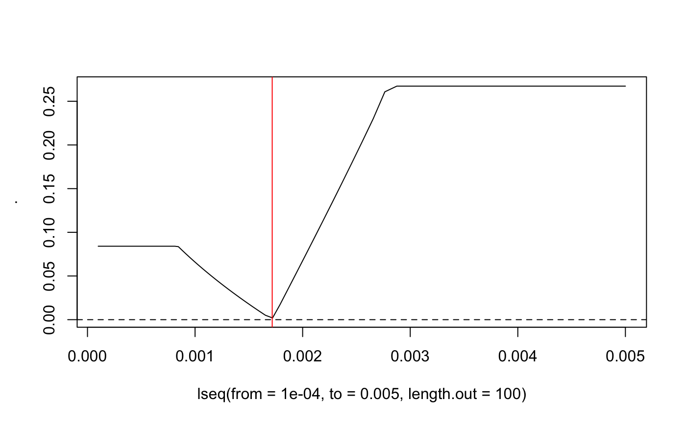
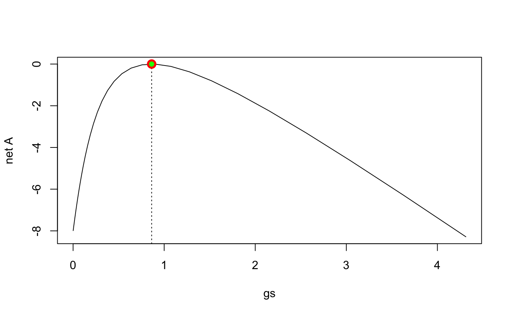
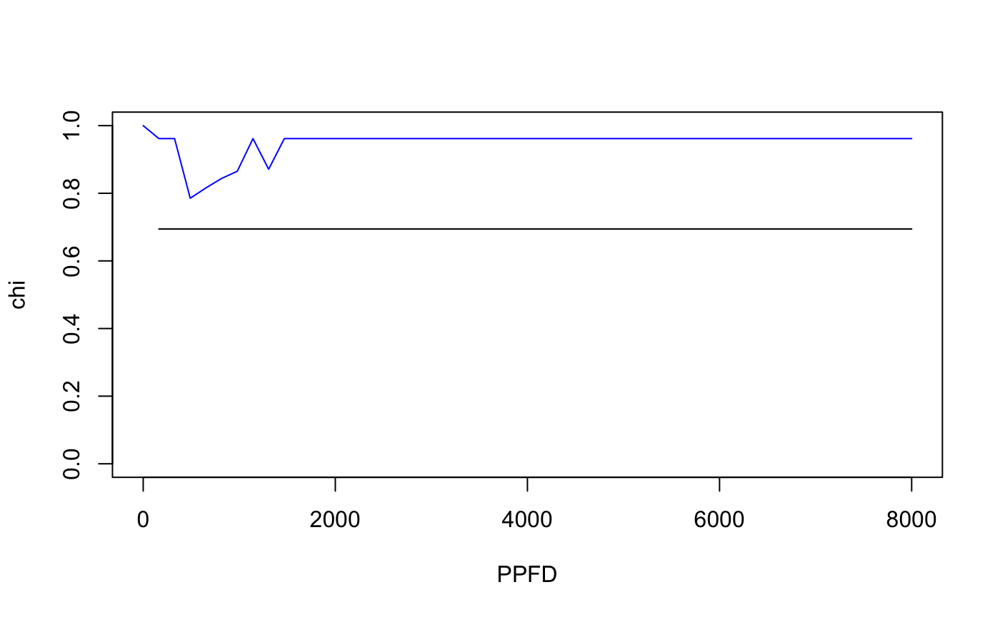

Theory
The P-model predicts an optimal ratio of \(c_i : c_a\), termed as \(\chi\), that balances the costs associated with maintaining the transpiration (\(E\)) stream and the carboxylation capacity \(V_{\text{cmax}}\). It can therefore be used to simulate the acclimation of the photosynthetic machinery to its environment - a mechanism that happens at a time scale of several days to months. At its core, it provides a solution for the optimality criterium \[ a \; \frac{\partial (E/A)}{\partial \chi} = -b \; \frac{\partial (V_{\mathrm{cmax}}/A)}{\partial \chi} \;\;\;\;\;\;\;\;\;\;\;\;(1) \] The optimal \(\chi\) solves the above equation and, with \(E = 1.6 g_s D\), \(A = g_s (1-\chi)\), and using the Rubisco-limited assimilation rate: \[ A = A_C = V_{\mathrm{cmax}} \; \frac{\chi\;c_a-\Gamma^{\ast}}{\chi\;c_a + K} \] is given by: \[ \chi = \frac{\Gamma^{\ast}}{c_a} + \left(1- \frac{\Gamma^{\ast}}{c_a}\right)\;\frac{\xi}{\xi + \sqrt{D}} \] with \[ \xi = \sqrt{\frac{b(K+\Gamma^{\ast})}{1.6\;a}} \] The unit cost ratio \(b/a\) is also referred to as \(\beta\).
P-model run
So much for the theory. Let’s run the P-model, without \(J_{\text{max}}\) limitation, for one set of inputs, being temperature, PPFD, VPD, CO\(_2\), elevation, and fAPAR.
To do so, run the rpmodel() function from the rsofun package:
library(rpmodel)
library(dplyr)
# modified seq() function to get a logarithmically spaced sequence
lseq <- function(from=1, to=100000, length.out=6) {
exp(seq(log(from), log(to), length.out = length.out))
}
## Set parameters
beta <- 146 # unit cost ratio a/b
gamma <- 0.105 # unit cost ratio c/b
kphio <- 0.05 # quantum yield efficiency
c_molmass <- 12.0107 # molar mass, g / mol
## Define environmental conditions
tc <- 20 # temperature, deg C
ppfd <- 300 # mol/m2/d
vpd <- 1000 # Pa
co2 <- 400 # ppm
elv <- 0 # m.a.s.l.
fapar <- 1 # fraction
out_analytical <- rsofun::rpmodel(
tc = tc,
vpd = vpd,
co2 = co2,
elv = elv,
kphio = kphio,
beta = beta,
fapar = fapar,
ppfd = ppfd,
method_optci = "prentice14",
method_jmaxlim = "none",
do_ftemp_kphio = FALSE
)The function returns a list of variables (see also man page by ?rpmodel), including \(V_{\mathrm{cmax}}\), \(g_s\), and all the parameters of the photosynthesis model (\(K\), \(\Gamma^{\ast}\)), which are all internally consistent, as can be verified for… \[
c_i = c_a - A / g_s = \chi c_a
\]
print( out_analytical$ci )## [1] 28.14209print( out_analytical$ca - (out_analytical$gpp / c_molmass) / out_analytical$gs )## [1] 28.14209print( out_analytical$ca * out_analytical$chi )## [1] 28.14209Yes.
And for… \[ A = V_{\text{cmax}} \frac{c_i-\Gamma^{\ast}}{c_i + K} = \phi_0 I_{\text{abs}} \frac{c_i-\Gamma^{\ast}}{c_i + 2 \Gamma^{\ast}} = g_s (c_a - c_i) \]
print( out_analytical$gpp / c_molmass )## [1] 10.68456print( out_analytical$vcmax * (out_analytical$ci - out_analytical$gammastar) / (out_analytical$ci + out_analytical$kmm ))## [1] 10.68456print( out_analytical$gs * (out_analytical$ca - out_analytical$ci) )## [1] 10.68456print( kphio * ppfd * fapar * (out_analytical$ci - out_analytical$gammastar) / (out_analytical$ci + 2 * out_analytical$gammastar ))## [1] 10.68456Yes.
Numerical solution
Instead of formulating the optimality criterium (Eq. 1) with respect to equality in marginal costs (derivative w.r.t. \(\chi\)), one may also write this as a minimisation of the combined costs. With \(\beta=b/a\), the following criterium is equivalent to Eq. 1: \[ E/A + \beta V_{\mathrm{cmax}}/A = min. \;\;\;\;\;\;\;\;(2) \] This formulation has the advantage that we can easily apply a numerial search algorithm to find the solution in \(\chi\). Why bother? I think it has an advantage as it allows for a more modular treatment, e.g., of transpiration as a function of \(g_s\). But for now, let’s stick with \(E=1.6g_sD\). Eq. 2 can be written out as: \[ \frac{1.6\;D}{c_a(1-\chi)} + \beta \frac{\chi c_a + K}{\chi c_a - \Gamma^{\ast}} = min. \]
To find the minimum, let’s define the numerical optimization function using the L-BFGS-B algorithm implemented in the optimr package:
calc_optimal_chi_num <- function( kmm, gammastar, ns_star, ca, vpd, beta ){
#-----------------------------------------------------------------------
# Input: - float, 'kmm' : Pa, Michaelis-Menten coeff.
# - float, 'ns_star' : (unitless) viscosity correction factor for water
# - float, 'vpd' : Pa, vapor pressure deficit
# Output: float, ratio of ci/ca (chi)
# Features: Returns an estimate of leaf internal to ambient CO2
# partial pressure following the "simple formulation".
# Depends: - kc
# - ns
# - vpd
#-----------------------------------------------------------------------
maximise_this <- function( chi, kmm, gammastar, ns_star, ca, vpd, beta ){
out <- 1.6 * ns_star * vpd / (ca * (1.0 - chi)) + beta * (chi * ca + kmm)/(chi * ca - gammastar)
return(out)
}
out_optim <- optimr::optimr(
par = 0.7,
lower = 0.1,
upper = 0.99,
fn = maximise_this,
kmm = kmm,
gammastar = gammastar,
ns_star = ns_star,
ca = ca,
vpd = vpd,
beta = beta,
method = "L-BFGS-B",
control = list( maxit = 100, maximize = TRUE )
)
return(out_optim$par)
}Now, let’s find the optimal \(\chi\) numerically using above function with the same parameters as calculated inside and returned by the P-model.
chi_opt <- calc_optimal_chi_num( out_analytical$kmm, out_analytical$gammastar, out_analytical$ns_star, out_analytical$ca, vpd, beta )
print(chi_opt)## [1] 0.6943512As a check: is this the same as returned by the P-model?
print(out_analytical$chi)## [1] 0.694352Practically, yes. A slight difference is due to the limited number of iterations (maxit=100).
Let’s call this \(\chi^{\ast}\). For the P-model, it is then assumed that \(A=A_J\) with \[ A_J = \phi_0 \; I_{\mathrm{abs}}\;\frac{c_a \chi^{\ast} - \Gamma^{\ast}}{c_a \chi^{\ast} + 2\Gamma^{\ast}} \] It is further assumed that the light-limited and Rubisco-limited assimilation rates are equal for average conditions (which implies that the arguments to the P-model run should represent average conditions). This assumption is also called the “coordination hypothesis.” \[ A_J = A_C \] This allows for solving for \(V_{\text{cmax}}\): \[ V_{\text{cmax}} = \phi_0 \; I_{\mathrm{abs}}\;\frac{c_a \chi^{\ast} + K}{c_a \chi^{\ast} + 2 \Gamma^{\ast} } \] This is what the P-model returns as can be verified:
print( out_analytical$vcmax)## [1] 31.98167print( kphio * fapar * ppfd * (out_analytical$ci + out_analytical$kmm) / (out_analytical$ci + 2 * out_analytical$gammastar ) )## [1] 31.98167Optimising \(g_s\) and \(V_{\text{cmax}}\) instead of \(\chi\)
At the core of the assimilation-transpiration trade-off are the quantities \(g_s\) and \(V_{\text{cmax}}\). The combined effect of their magnitudes determines \(\chi\). Why not simutaneously optimize \(g_s\) and \(V_{\text{cmax}}\)? We can write Eq. 2 also as: \[
(1.6g_sD + \beta V_{\text{cmax}})/A_C = min. \;\;\;\;\;\;\;(3)
\] and implement this in another numerical search function. Note that \(c_i\) can be calculated from solving the equation system \[
A = V_{\mathrm{cmax}} \; \frac{c_i-\Gamma^{\ast}}{c_i + K} \\
A = g_s(c_a - c_i)
\] which leads to a quadratic equation for \(c_i\) where we will only take the positive real part (Re(root_ci)[which(Re(root_ci)>0)]). This can be implemented as follows.
calc_optimal_gs_vcmax <- function( par, args, maximize=FALSE, return_all=FALSE ){
kmm <- args[1]
gammastar <- args[2]
ns_star <- args[3]
ca <- args[4]
vpd <- args[5]
beta <- args[6]
vcmax <- par[1]
gs <- par[2]
## Get assimilation and ci, given Vcmax and gs
## by solving the equation system
## assim = vcmax * (ci - gammastar)/(ci + kmm)
## assim = gs * (ca - ci)
a_quad <- -1.0 * gs
b_quad <- gs * ca - gs * kmm - vcmax
c_quad <- gs * ca * kmm + vcmax * gammastar
root_ci <- try( polyroot( c(c_quad, b_quad, a_quad) ) )
if (class(root_ci)=="try-error"){
return( list( vcmax=NA, gs=NA, ci=NA, chi=NA, a_c=NA, cost_transp=NA, cost_vcmax=NA, net_assim=NA ) )
} else {
## take only real part of the root
ci <- Re(root_ci)
## take only positive root
ci <- ci[which(ci>0)] # take positive root
## if both are positive, take the one that satisfies ci < ca (don't know if this is necessary)
if (length(ci)>1) ci <- ci[which(ci<ca)]
## A_c
a_c <- vcmax * (ci - gammastar) / (ci + kmm)
## only cost ratio is defined. for this here we need absolute values. Set randomly
cost_transp <- 1.6 * ns_star * gs * vpd
cost_vcmax <- beta * vcmax
## Option B: This is equivalent to the P-model with its optimization of ci:ca.
net_assim <- -(cost_transp + cost_vcmax) / a_c
if (maximize) net_assim <- -net_assim
if (return_all){
return( list( vcmax=vcmax, gs=gs, ci=ci, chi=ci/ca, a_c=a_c, cost_transp=cost_transp, cost_vcmax=cost_vcmax, net_assim=net_assim ) )
} else {
return( net_assim )
}
}
}Now that the target function is defined, we can actually numerically search for the optimal \(V_{\text{cmax}}\) and \(g_s\). We need to provide the algorithm with starting values, taken here as the \(V_{\text{cmax}}\) and \(g_s\) returned by our initial P-model call.
wrap_calc_optimal_gs_vcmax <- function( kmm, gammastar, ns_star, ca, vpd, beta, vcmax_start, gs_start ){
out_optim <- optimr::optimr(
par = c( out_analytical$vcmax, out_analytical$gs ), # starting values
lower = c( out_analytical$vcmax*0.0001, out_analytical$gs*0.001 ),
upper = c( out_analytical$vcmax*20, out_analytical$gs*30 ),
fn = calc_optimal_gs_vcmax,
args = c( out_analytical$kmm, out_analytical$gammastar, out_analytical$ns_star, out_analytical$ca, vpd, beta ),
method = "L-BFGS-B",
maximize = TRUE,
control = list( maxit = 1000 )
)
varlist <- calc_optimal_gs_vcmax( par=out_optim$par, args=c(kmm, gammastar, ns_star, ca, vpd, beta), maximize=FALSE, return_all=TRUE )
return(varlist)
}Note that, given that the optimality criterium implemented here (Eq. 3) embodies the same idea and is mathematically identical as Eq. 1, this should yield the same \(\chi\) (which can be back-calculated from the optimised \(V_{\text{cmax}}\) and \(g_s\)). Let’s check if this is the case.
## [1] "Optimal chi from Vcmax-gs optimization: 0.69435201913794"## [1] "Optimal chi from P-model: 0.694352013202358"Indeed, this is the same.
Now, we have an optimised \(V_{\text{cmax}}\) (lets call it \(V_{\text{cmax}}^{\ast}\)), and we can have an optimised \(c_i\) which is consistent with the former. Given this, we can take the same step as is done in the P-model and assume that \(A_J=A_C\), which leads to \[ V_{\text{cmax}} = \phi_0 \; I_{\mathrm{abs}}\;\frac{c_a \chi^{\ast} + K}{c_a \chi^{\ast} + 2 \Gamma^{\ast} } \] To verify one again:
## [1] "optimal Vcmax: 31.9816667938782"print( paste( "Vcmax^P:", kphio * fapar * ppfd * (varlist$ci + varlist$kmm) / (varlist$ci + 2 * varlist$gammastar )) )## [1] "Vcmax^P: "## [1] "Vcmax from P-model: 31.9816667938778"It’s important to note that calculating \(V_{\text{cmax}}\) like this implies the assumption of \(A_J = A_C\), while solving for simultaneously optimal \(V_{\text{cmax}}\) and \(g_s\) doesn’t use this assumption. Nevertheless, the results are identical, which may not be immediately obvious.
Light limitation?
But what about the implicit assumption made in the optmisation that assimilation always follows the Rubisco-limited curve? Shouldn’t there be a limit given by light availability? We can spell this out by calculating \(A=min(A_C, A_J)\) or equivalently \(c_i=max(c_i^C, c_i^J)\) and modify calc_optimal_gs_vcmax() accordingly. We now need to additionally solve the equation system \[
A = \phi_0 I_{\text{abs}} \; \frac{c_i-\Gamma^{\ast}}{c_i + 2 \Gamma^{\ast}} \\
A = g_s(c_a - c_i)
\]
This is implemented as follows:
calc_optimal_gs_vcmax_ll <- function( par, args, iabs, kphio, maximize=FALSE, return_all=FALSE ){
kmm <- args[1]
gammastar <- args[2]
ns_star <- args[3]
ca <- args[4]
vpd <- args[5]
beta <- args[6]
vcmax <- par[1]
gs <- par[2]
## Get ci using Rubisco-limited assimilation
## Get assimilation and ci, given Vcmax and gs
## by solving the equation system
## assim = vcmax * (ci - gammastar)/(ci + kmm)
## assim = gs * (ca - ci)
a_quad <- -1.0 * gs # coefficient of quadratic term
b_quad <- gs * ca - gs * kmm - vcmax
c_quad <- gs * ca * kmm + vcmax * gammastar
root_ci_c <- try( polyroot( c(c_quad, b_quad, a_quad) ) )
## Get ci using light-limited assimilation
## Get assimilation and ci, given Vcmax and gs
## by solving the equation system
## assim = kphio * iabs * (ci-gammastar)/(ci+2*gammastar)
## assim = gs * (ca - ci)
a_quad <- gs # coefficient of quadratic term
b_quad <- kphio * iabs - gs * ca + 2 * gs * gammastar
c_quad <- - kphio * iabs * gammastar - 2 * gs * ca * gammastar
root_ci_j <- try( polyroot( c(c_quad, b_quad, a_quad) ) )
if (class(root_ci_j)=="try-error" || class(root_ci_c)=="try-error"){
return( list( vcmax=NA, gs=NA, ci=NA, chi=NA, a_c=NA, a_j=NA, ci_c=NA, ci_j=NA, cost_transp=NA, cost_vcmax=NA, net_assim=NA ) )
} else {
## take only real part of the root
ci_j <- Re(root_ci_j)
ci_c <- Re(root_ci_c)
## take only positive root
ci_j <- ci_j[which(ci_j>0)] # take positive root
ci_c <- ci_c[which(ci_c>0)] # take positive root
## if both are positive, take the one that satisfies ci < ca (don't know if this is necessary)
if (length(ci_j)>1) ci_j <- ci_j[which(ci_j<ca)]
if (length(ci_c)>1) ci_c <- ci_c[which(ci_c<ca)]
## Rubisco-limited
a_c <- vcmax * (ci_c - gammastar) / (ci_c + kmm)
## light-limited
a_j <- kphio * iabs * (ci_j - gammastar) / (ci_j + 2 * gammastar)
## Take minimum of the two assimilation rates
assim <- min( a_j, a_c )
# if (return_all){
# if (a_j<a_c) print("Warning: A_J is lower than A_C")
# }
## ... and consistently the maximum of the two ci
ci <- max( ci_j, ci_c )
## only cost ratio is defined. for this here we need absolute values. Set randomly
cost_transp <- 1.6 * ns_star * gs * vpd
cost_vcmax <- beta * vcmax
## Option B: This is equivalent to the P-model with its optimization of ci:ca.
net_assim <- -(cost_transp + cost_vcmax) / assim
if (maximize) net_assim <- -net_assim
if (return_all){
return( list( vcmax=vcmax, gs=gs, ci=ci, chi=ci/ca, a_c=a_c, a_j=a_j, ci_c=ci_c, ci_j=ci_j, cost_transp=cost_transp, cost_vcmax=cost_vcmax, net_assim=net_assim ) )
} else {
return( net_assim )
}
}
}Let’s compare the results for \(\chi\) with this modified version to the original one:
wrap_calc_optimal_gs_vcmax_ll <- function( ppfd, fapar, kphio, kmm, gammastar, ns_star, ca, vpd, beta, vcmax_start, gs_start ){
out_optim <- optimr::optimr(
par = c( vcmax_start, gs_start ), # starting values
lower = c( vcmax_start*0.0001, gs_start*0.001 ),
upper = c( vcmax_start*20, gs_start*30 ),
fn = calc_optimal_gs_vcmax_ll,
args = c(kmm, gammastar, ns_star, ca, vpd, beta),
iabs = (ppfd * fapar),
kphio = kphio,
method = "L-BFGS-B",
maximize = TRUE,
control = list( maxit = 1000 )
)
varlist <- calc_optimal_gs_vcmax_ll( par=out_optim$par, args=c(kmm, gammastar, ns_star, ca, vpd, beta), iabs=(fapar*ppfd), kphio=kphio, maximize=FALSE, return_all=TRUE )
return(varlist)
}
varlist_ll <- wrap_calc_optimal_gs_vcmax_ll( ppfd, fapar, kphio, out_analytical$kmm, out_analytical$gammastar, out_analytical$ns_star, out_analytical$ca, vpd, beta, out_analytical$vcmax, out_analytical$gs )
## Invoke function with optimised Vcmax and gs (in out_optim$par), now returning all variables
print( paste("Optimal chi from P-model:", out_analytical$chi ) )## [1] "Optimal chi from P-model: 0.694352013202358"## [1] "Optimal chi from Vcmax-gs optimization: 0.69435201913794"## [1] "Optimal chi from Vcmax-gs opt. with light limit.: 0.694352013202358"In this case, it’s not a problem. It yields the same \(\chi\). But is this the case across a range of light conditions (remember, that \(\chi\) is independent of light in the original model)?
ppfd_vec <- seq(from=0, to=8000, length.out=50)
out_opt_ll_list <- purrr::map(
as.list( ppfd_vec),
~wrap_calc_optimal_gs_vcmax_ll( ., fapar, kphio, out_analytical$kmm, out_analytical$gammastar, out_analytical$ns_star, out_analytical$ca, vpd, beta, out_analytical$vcmax, out_analytical$gs )
)
chi_vec <- out_opt_ll_list %>% purrr::map_dbl("chi")
plot( ppfd_vec, chi_vec, type="l", xlab="PPFD", ylab="chi")
It is the same. But why?
The same with a twist
Arguably the most intuitive way to specify an optimality criterium that (seemingly) embodies the same idea like Eqs. 1 and 3, is to maximise a “net assimilation” rate, defined as assimilation minus the costs for maintaining the transpiration stream and carboxylation capacity, instead of the costs per unit assimilation as done above. We can write this as follows:
Maximise the following term numerically, again subject to \(V_{\mathrm{cmax}}\) and \(g_s\): \[
A_n = A - aE -bV_{\text{cmax}} = max. \;\;\;\;\;\;\;\;\;\;\;\;(4)
\] We can divide this by \(a\) in order to define it with the cost ratio \(\beta\) which we have used above. However, an absolute cost remains in the first term: \[
A_n = \frac{1}{a} A - E -\beta V_{\text{cmax}} = max. \;\;\;\;\;\;\;\;\;\;\;\;(5)
\] So be it. But this has implications because we now need to know the abosulte cost terms and not just their ratio. Anyways, we can implement Eq. 5 analogously to above, now with an additional argument cost_scalar.
calc_net_assim_eq4 <- function( par, args, iabs, kphio, cost_scalar, maximize=FALSE, return_all=FALSE ){
kmm <- args[1]
gammastar <- args[2]
ns_star <- args[3]
ca <- args[4]
vpd <- args[5]
beta <- args[6]
vcmax <- par[1]
gs <- par[2]
## Get assimilation and ci, given Vcmax and gs
## by solving the equation system
## assim = vcmax * (ci - gammastar)/(ci + kmm)
## assim = gs * (ca - ci)
a_quad <- -1.0 * gs
b_quad <- gs * ca - gs * kmm - vcmax
c_quad <- gs * ca * kmm + vcmax * gammastar
root_ci <- try( polyroot( c(c_quad, b_quad, a_quad) ) )
if (class(root_ci)=="try-error"){
return( list( vcmax=NA, gs=NA, ci=NA, chi=NA, a_c=NA, cost_transp=NA, cost_vcmax=NA, net_assim=NA ) )
} else {
## take only real part of the root
ci <- Re(root_ci)
## take only positive root
ci <- ci[which(ci>0)] # take positive root
## if both are positive, take the one that satisfies ci < ca (don't know if this is necessary)
if (length(ci)>1) ci <- ci[which(ci<ca)]
## A_c
a_c <- vcmax * (ci - gammastar) / (ci + kmm)
## only cost ratio is defined. for this here we need absolute values. Set randomly
## here cost_scalar basically corresponds to a in Eq. 2
cost_transp <- cost_scalar * 1.6 * ns_star * gs * vpd
cost_vcmax <- cost_scalar * beta * vcmax
## The trouble is that A_c is used to determine optimality here, but actual assimilation is
## later calculated following the light-limited function for A_j.
net_assim <- a_c - cost_transp - cost_vcmax
if (maximize) net_assim <- -net_assim
if (return_all){
return( list( vcmax=vcmax, gs=gs, ci=ci, chi=ci/ca, a_c=a_c, cost_transp=cost_transp, cost_vcmax=cost_vcmax, net_assim=net_assim ) )
} else {
return( net_assim )
}
}
}We don’t know cost_scalar, so let’s just pick a random one (0.0003 used here) and hope we get the same result for \(\chi\) as above.
## [1] "optimal Vcmax: 639.633335877556"## [1] "optimal gs: 25.874954924183"## [1] "Optimal chi from Vcmax-gs optimization (Eq. 5): 0.778413519903281"## [1] "Optimal chi from P-model: 0.694352013202358"Ooops. Not the same.
The problem of all of this is that the cost factor that scales both the cost of \(V_{\text{cmax}}\) and \(g_s\) equally is missing from the optimization criterium when \(E/A + \beta V_{\text{cmax}}/A = max.\) is used. Let’s try to find a value for the cost scalar so that we get the same \(\chi\) as when following Eq. 2 or 3 for the opmitisation.
setzero <- function( x_cost, chi_target, out_analytical, fapar, ppfd, vpd ){
args <- c( out_analytical$kmm, out_analytical$gammastar, out_analytical$ns_star, out_analytical$ca, vpd, beta )
out_optim <- optimr::optimr(
par = c( out_analytical$vcmax, out_analytical$gs ),
lower = c( out_analytical$vcmax*0.0001, out_analytical$gs*0.001 ),
upper = c( out_analytical$vcmax*20, out_analytical$gs*30 ),
fn = calc_net_assim_eq4,
args = args,
iabs = (fapar * ppfd),
kphio = kphio,
cost_scalar = x_cost,
maximize = TRUE,
method = "L-BFGS-B",
control = list( maxit = 1000 )
)
list_numerical <- calc_net_assim_eq4( out_optim$par, args, iabs=(fapar * ppfd), kphio = kphio, cost_scalar=x_cost, return_all = TRUE )
out <- chi_target - list_numerical$chi
return(abs(out))
}
sapply( lseq( from=0.0001, to=0.005, length.out = 100), FUN = function(x) setzero( x, out_analytical$chi, out_analytical, fapar, ppfd, vpd ) ) %>%
plot( lseq( from=0.0001, to=0.005, length.out = 100), ., type="l" )
abline(h=0, lty=2)
## Watch out: numerical noise is happening. For this example, chose starting point where visually determined in plot above
unitcost_root <- optimr::optimr(
par = 0.002,
fn = setzero,
chi_target = out_analytical$chi,
out_analytical = out_analytical,
fapar = fapar,
ppfd = ppfd,
vpd = vpd,
control = list( maxit = 100000 )
)
abline( v = unitcost_root$par, col="red" )
Hence, the cost scalar for which the result for \(\chi\) is is identical to the P-model’s solution, is:
print( unitcost_root$par )## [1] 0.001717135Let’s verify this as above, setting cost_scalar = unitcost_root$par:
## [1] "Optimal chi from absolute-cost-Vcmax-gs optimization (Eq. 5): 0.694352013202358"## [1] "Optimal chi from P-model: 0.694352013202358"Ok, they are now identical.
Some illustration of this: Plot a surface of \(A_n\) as a function of \(V_{\text{cmax}}\) and \(g_s\), with a red point where the numerical optimization found the maximum, and a green point, where the analytical solution lies.
len_vcmax <- 50
len_gs <- 50
vcmax_vec <- lseq(out_analytical$vcmax*0.0001, out_analytical$vcmax*5, length.out = len_vcmax)
gs_vec <- lseq(out_analytical$gs*0.001, out_analytical$gs*5, length.out = len_gs)
args <- c( out_analytical$kmm, out_analytical$gammastar, out_analytical$ns_star, out_analytical$ca, vpd, beta )
A_net <- expand.grid(vcmax_vec, gs_vec) %>%
setNames( c("vcmax", "gs") ) %>%
rowwise() %>%
do( net_assim = calc_net_assim_eq4(
c(.$vcmax, .$gs),
args=args,
iabs=(fapar * ppfd),
kphio = kphio,
cost_scalar=unitcost_root$par,
maximize=FALSE
) ) %>%
tidyr::unnest(net_assim) %>%
as.matrix() %>%
array( dim=c(len_vcmax,len_gs) )
pmat <- persp( (vcmax_vec), (gs_vec), A_net,
phi = 10, # Azimut, 0 is along gs_vec axis
theta = 30,
col="lightblue"
)
points( trans3d( (out_optim$par[1]), (out_optim$par[2]), -out_optim$value, pmat ), pch=16, col="red", cex=1.8 )
# Add point for analytically-determined Vcmax and gs, and the net assimilation rate with the same unit cost as above:
cost_transp <- unitcost_root$par * 1.6 * out_analytical$ns_star * out_analytical$gs * vpd
cost_vcmax <- beta * unitcost_root$par * out_analytical$vcmax
net_assim_analytical <- out_analytical$gpp / c_molmass - cost_transp - cost_vcmax
points( trans3d( (out_analytical$vcmax), (out_analytical$gs), net_assim_analytical, pmat ), pch=16, col="green", cex=1 )
# numerical (of course, the value is not the same as analytical, because it's the optimization target and not A_j. Re-calculate A_j from optimized Vcmax and gs.):
print( c(out_optim$par[1], out_optim$par[2], -out_optim$value) )## [1] 3.198167e+01 8.624985e-01 -5.199398e-06out_optim_numerical <- calc_net_assim_eq4(
par = c(out_optim$par[1], out_optim$par[2]),
args = c( out_analytical$kmm, out_analytical$gammastar, out_analytical$ns_star, out_analytical$ca, vpd, beta ),
iabs = (fapar * ppfd),
kphio = kphio,
cost_scalar = unitcost_root$par,
return_all = TRUE
)
print( c( out_optim_numerical$vcmax, out_optim_numerical$gs, out_optim_numerical$net_assim ))## [1] 3.198167e+01 8.624985e-01 -5.199398e-06## [1] 3.198167e+01 8.624985e-01 -5.199398e-06And in 2D. For fixed (optimal) \(g_s\).
## cost_scalar is searched by hand
sapply( as.list(vcmax_vec), FUN = function(x) calc_net_assim_eq4( c(x, out_optim$par[2]), args, iabs=(fapar * ppfd), kphio = kphio, cost_scalar = unitcost_root$par ) ) %>%
plot( vcmax_vec, ., type="l", xlab="Vcmax", ylab="net A" )
abline(v=out_optim$par[1], lty=3)
points( (out_optim$par[1]), -out_optim$value, pch=16, col="red", cex=1.8 )
points( (out_analytical$vcmax), net_assim_analytical, pch=16, col="green", cex=1 )
And for fixed (optimal) \(V_{\text{cmax}}\):
## cost_scalar is searched by hand
sapply( as.list(gs_vec), FUN = function(x) calc_net_assim_eq4( c(out_optim$par[1], x), args, iabs=(fapar * ppfd), kphio = kphio, cost_scalar = unitcost_root$par ) ) %>% plot( gs_vec, ., type="l", xlab="gs", ylab="net A" )
abline( v=out_optim$par[2], lty=3 )
points( (out_optim$par[2]), -out_optim$value, pch=16, col="red", cex=1.8 )
points( (out_analytical$gs), net_assim_analytical, pch=16, col="green", cex=1 )
Introducing \(J_{\text{max}}\) limitation
From Eq. 4 it’s straight-forward to introduce the cost of maintaining a certain \(J_{\text{max}}\) in the optimality criterium as \[ A_n = A - aE -bV_{\text{cmax}} - cJ_{\text{max}} = max. \;\;\;\;\;\;\;\;\;\;\;\;(5) \]
In the optimisation routine it is now essential to take \(A = min(A_C, A_J)\). With \(J_{\text{max}}\) limitation factored in using the Smith (1937) formulation, \(A_J\) is \[ A_J = \phi_0 \; I_{\mathrm{abs}} \; \frac{c_i - \Gamma^{\ast}}{c_i + 2\Gamma^{\ast}} \; \frac{1}{\sqrt{1+ \left( \frac{4\;\phi_0\;I_{\mathrm{abs}}}{J_{\mathrm{max}}} \right)^{2}}} \]
We can implement this as follows::
calc_optimal_gs_vcmax_jmax <- function( par, args, iabs, kphio, cost_scalar, maximize=FALSE, return_all=FALSE ){
kmm <- args[1]
gammastar <- args[2]
ns_star <- args[3]
ca <- args[4]
vpd <- args[5]
beta <- args[6]
gamma <- args[7]
vcmax <- par[1]
gs <- par[2]
jmax <- par[3]
calc_L_factor <- function( jmax, iabs, kphio ){
1.0 / sqrt( 1 + (4 * kphio * iabs / jmax )^2 )
}
## Get ci using Rubisco-limited assimilation
## Get assimilation and ci, given Vcmax and gs
## by solving the equation system
## assim = vcmax * (ci - gammastar)/(ci + kmm)
## assim = gs * (ca - ci)
a_quad <- -1.0 * gs # coefficient of quadratic term
b_quad <- gs * ca - gs * kmm - vcmax
c_quad <- gs * ca * kmm + vcmax * gammastar
root_ci_c <- try( polyroot( c(c_quad, b_quad, a_quad) ) )
## Get ci using light-limited assimilation
## Get assimilation and ci, given Vcmax and gs
## by solving the equation system
## assim = kphio * iabs * (ci-gammastar)/(ci+2*gammastar)
## assim = gs * (ca - ci)
L_factor <- calc_L_factor( jmax, iabs, kphio )
a_quad <- L_factor * gs # coefficient of quadratic term
b_quad <- kphio * iabs - L_factor * gs * ca + 2 * L_factor * gs * gammastar
c_quad <- - kphio * iabs * gammastar - 2 * L_factor * gs * ca * gammastar # minus was missing!!!
root_ci_j <- try( polyroot( c(c_quad, b_quad, a_quad) ) )
if (class(root_ci_j)=="try-error" || class(root_ci_c)=="try-error"){
if (!return_all){
return(9999.9)
} else {
return( list( vcmax=NA, gs=NA, ci=NA, chi=NA, a_c=NA, a_j=NA, ci_c=NA, ci_j=NA, cost_transp=NA, cost_vcmax=NA, cost_jmax=NA, net_assim=NA ) )
}
} else {
## take only real part of the root
ci_j <- Re(root_ci_j)
ci_c <- Re(root_ci_c)
## take only positive root
ci_j <- ci_j[which(ci_j>0)] # take positive root
ci_c <- ci_c[which(ci_c>0)] # take positive root
## if both are positive, take the one that satisfies ci < ca (don't know if this is necessary)
if (length(ci_j)>1) ci_j <- ci_j[which(ci_j<ca)]
if (length(ci_c)>1) ci_c <- ci_c[which(ci_c<ca)]
## Rubisco-limited
a_c <- vcmax * (ci_c - gammastar) / (ci_c + kmm)
## light-limited
a_j <- kphio * iabs * (ci_j - gammastar) / (ci_j + 2 * gammastar)
## Take minimum of the two assimilation rates
assim <- min( a_j, a_c )
# if (return_all){
# if (a_j<a_c) print("Warning: A_J is lower than A_C")
# }
## ... and consistently the maximum of the two ci
ci <- max( ci_j, ci_c )
## only cost ratio is defined. for this here we need absolute values. Set randomly
## here cost_scalar basically corresponds to a in Eq. 2
cost_transp <- cost_scalar * 1.6 * ns_star * gs * vpd
cost_vcmax <- cost_scalar * beta * vcmax
cost_jmax <- gamma * jmax # Tried here without cost_scalar because we know that dA/dJmax = 0.105 = gamma
## The trouble is that A_c is used to determine optimality here, but actual assimilation is
## later calculated following the light-limited function for A_j.
net_assim <- assim - cost_transp - cost_vcmax - cost_jmax
if (maximize) net_assim <- -net_assim
if (return_all){
return( list( vcmax=vcmax, gs=gs, ci=ci, chi=ci/ca, a_c=a_c, a_j=a_j, ci_c=ci_c, ci_j=ci_j, cost_transp=cost_transp, cost_vcmax=cost_vcmax, cost_jmax=cost_jmax, net_assim=net_assim ) )
} else {
return( net_assim )
}
}
}Let’s compare the results for \(\chi\) with \(J_{\text{max}}\) limitation and without.
## test
test <- calc_optimal_gs_vcmax_jmax(
par = c( out_analytical$vcmax, out_analytical$gs, out_analytical$vcmax ),
args = c( out_analytical$kmm, out_analytical$gammastar, out_analytical$ns_star, out_analytical$ca, vpd, beta, gamma),
iabs = (ppfd * fapar),
kphio = kphio,
cost_scalar = unitcost_root$par,
maximize=FALSE,
return_all=TRUE
)
wrap_calc_optimal_gs_vcmax_jmax <- function( ppfd, fapar, kphio, kmm, gammastar, ns_star, ca, vpd, beta, gamma, cost_scalar, vcmax_start, gs_start, jmax_start ){
out_optim <- optimr::optimr(
par = c( vcmax_start, gs_start, jmax_start ), # starting values
lower = c( vcmax_start*0.0001, gs_start*0.001, jmax_start*0.001 ),
upper = c( vcmax_start*20, gs_start*30, jmax_start*30 ),
fn = calc_optimal_gs_vcmax_jmax,
args = c(kmm, gammastar, ns_star, ca, vpd, beta, gamma),
iabs = (ppfd * fapar),
kphio = kphio,
cost_scalar = cost_scalar,
method = "L-BFGS-B",
maximize = TRUE,
control = list( maxit = 1000 )
)
varlist <- calc_optimal_gs_vcmax_jmax( par=out_optim$par, args=c(kmm, gammastar, ns_star, ca, vpd, beta, gamma), iabs=(fapar*ppfd), kphio=kphio, cost_scalar=cost_scalar, maximize=FALSE, return_all=TRUE )
return(varlist)
}
varlist_jmax <- wrap_calc_optimal_gs_vcmax_jmax( ppfd, fapar, kphio, out_analytical$kmm, out_analytical$gammastar, out_analytical$ns_star, out_analytical$ca, vpd, beta, gamma, unitcost_root$par, out_analytical$vcmax, out_analytical$gs, out_analytical$vcmax )
## Invoke function with optimised Vcmax and gs (in out_optim$par), now returning all variables
print( paste("Optimal chi from P-model:", out_analytical$chi ) )## [1] "Optimal chi from P-model: 0.694352013202358"## [1] "Optimal chi from Vcmax-gs optimization: 0.694352013202358"## [1] "Optimal chi from Vcmax-gs opt. with light limit.: 0.694352013202358"## [1] "Optimal chi from Vcmax-gs opt. with Jmax limit.: 0.96167641552231"For a set of light levels
ppfd_vec <- seq(from=0, to=8000, length.out=50)
out_opt_ll_list <- purrr::map(
as.list( ppfd_vec),
~wrap_calc_optimal_gs_vcmax_ll( ., fapar, kphio, out_analytical$kmm, out_analytical$gammastar, out_analytical$ns_star, out_analytical$ca, vpd, beta, out_analytical$vcmax, out_analytical$gs )
)
chi_vec_ll <- out_opt_ll_list %>% purrr::map_dbl("chi")
out_opt_jmax_list <- purrr::map(
as.list( ppfd_vec),
~wrap_calc_optimal_gs_vcmax_jmax( ., fapar, kphio, out_analytical$kmm, out_analytical$gammastar, out_analytical$ns_star, out_analytical$ca, vpd, beta, gamma, unitcost_root$par, out_analytical$vcmax, out_analytical$gs, out_analytical$vcmax )
)
chi_vec_jmax <- out_opt_jmax_list %>% purrr::map_dbl("chi")
plot( ppfd_vec, chi_vec_ll, type="l", xlab="PPFD", ylab="chi", ylim=c(0,1))
lines( ppfd_vec, chi_vec_jmax, col="blue" )